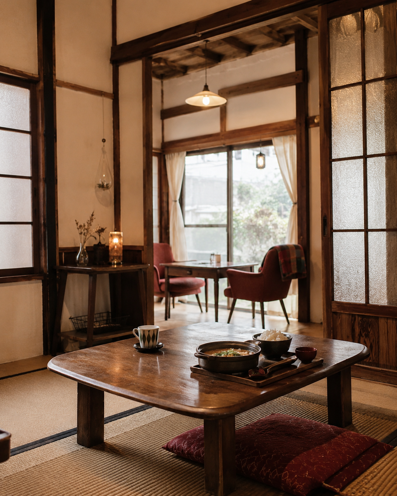
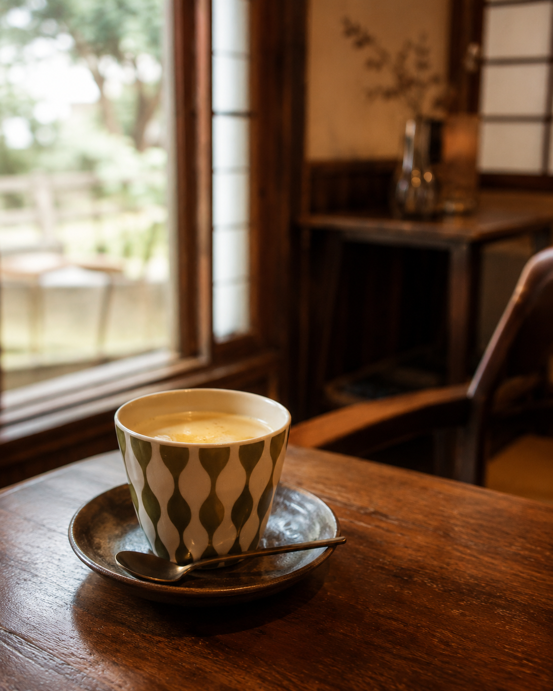
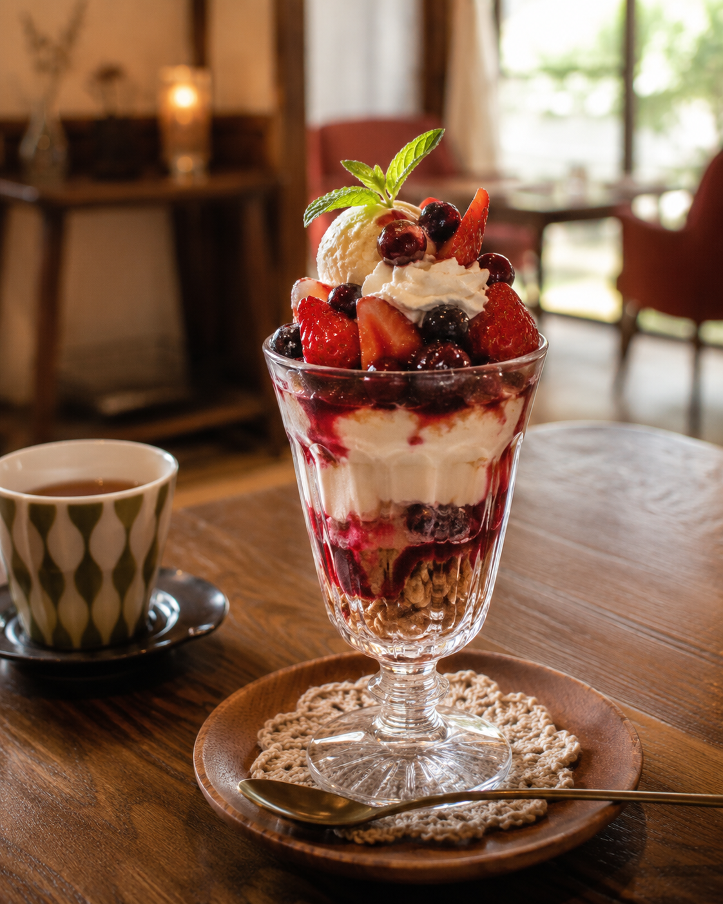

選ばれる理由
にぎやかさよりも、落ち着きや懐かしさを楽しみたい方へ。ひとりでも、少人数でも、肩の力を抜いて過ごせる空間です。
レコードや懐かしい音楽が流れる、昭和レトロな雰囲気のカフェです。
畳席でゆっくり座りながら、実家に帰ってきたような気分で過ごせます。
中央図書館・旧開智学校から徒歩圏内。松本散策の途中のひと休みにも向いています。
お食事・甘味・お飲み物
温かいお食事や甘味、お飲み物を楽しみながら、ゆっくり過ごせるカフェです。内容は季節や日によって変わる場合があるため、来店前の確認がおすすめです。

初めての方へ
実家カフェは、松本市蟻ケ崎の住宅街にある隠れ家のようなお店です。営業日は土曜・日曜・月曜の11:00〜17:00です。道や駐車場が分かりにくい場合があるため、車でお越しの方は事前にアクセス情報をご確認ください。
店舗の雰囲気
畳、木のテーブル、レトロな空気感。どこか懐かしい民家の中で、会話や読書、ひとり時間をゆっくり楽しめます。派手さよりも、ほっと落ち着ける時間を大切にしたい方に向いた空間です。


店舗情報
ご来店の前に
営業日が限られているため、来店前に公式サイトや営業カレンダーをご確認いただくと安心です。ご予約やお問い合わせは、お電話でご確認ください。